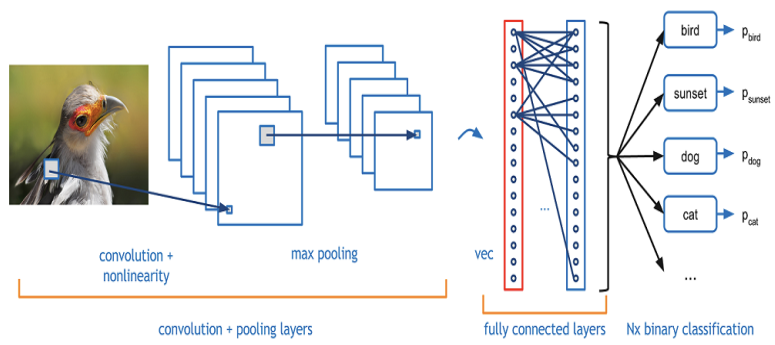
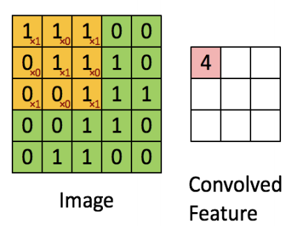
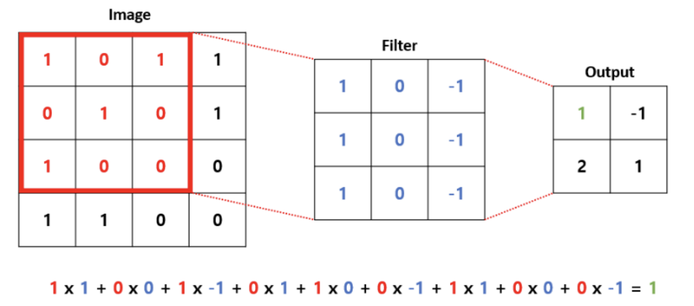
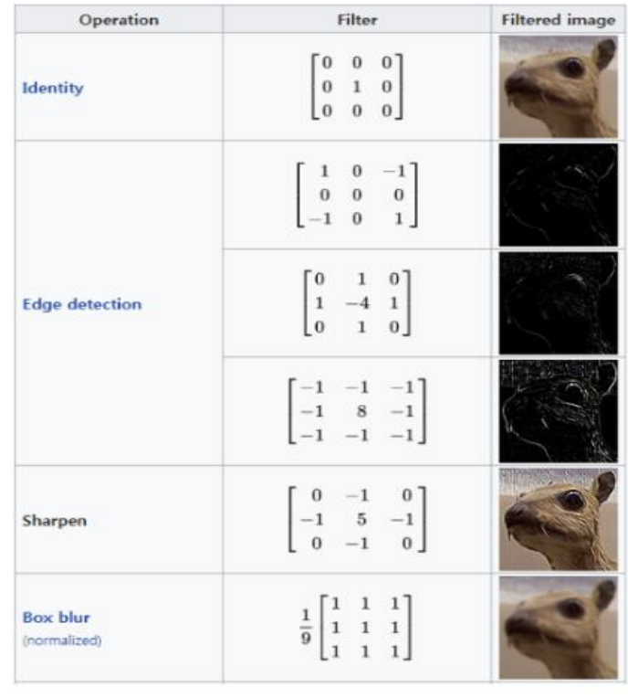
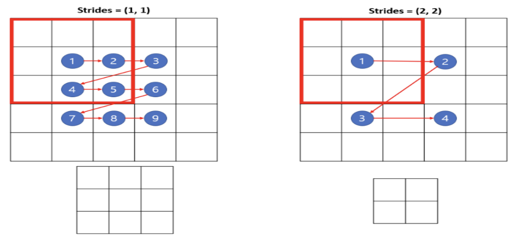
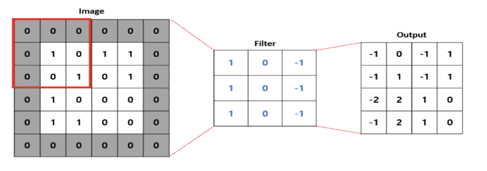
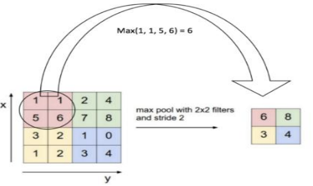
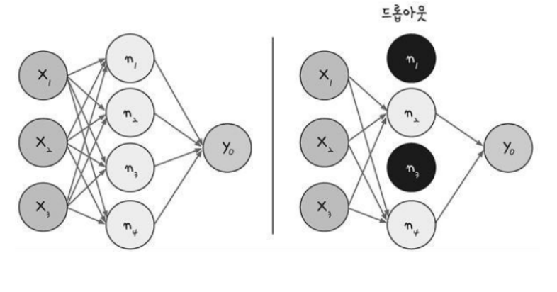
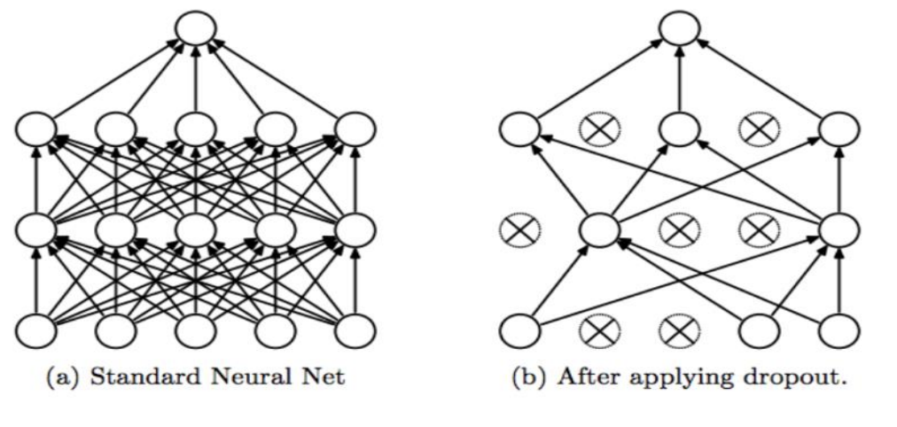

CNN
- 합성곱 신경망 (CNN : Convolutional Neural Network)
- 합성공 신경망(CNN : Convolutional Neural Network)은 1998년 얀 레쿤(Yann LeCun)교수가 소개한 이래로 널리 사용되고 있는 신경망 이론으로, 특히 이미지 인식 분야에서 강력한 성능을 발휘하고 있다.
- 최근에는 이미지 인식 뿐만 아니라, 음성인식이나 자연어 처리 등에도 사용되고 있을 정도로 활용도가 매우 뛰어난 성과를 보여주고 있다.
- 신경망의 단점은 신경망의 층(Layer)이 늘어나면 제대로 학습하지 못한다는 문제가 있지만, CNN에서는 이 문제를 입력층과 출력층 사이에 합성곱층(Convolutional Layer)과 풀링층(Pooling Layer)을 넣어서 보완하고 있다
1. CNN 기본 구조

- 분류를 위핚 컨볼루션 싞경망은 특징 추출을 하는 부분과 분류기 부분으로 나누어진다.
1) 특징 추출(Feature Extraction)
- 컨볼루션 레이어(Convolution Layer) + 풀링 레이어(Pooling Layer)를 반복하여 구성 된다.
- CNN의 주요한 성질 중 하나는 특징표현 학습(Feature Representation Learning)입니다.
- 특징 추출 기법인 컨볼루션 (Convolution, 합성곱) 연산을 사용하여 이미지의 픽셀을 주변의 픽셀의 조합으로 대체하는 방식입니다.
2) 분류기(Classifier)
- Dense Layer + Dropout Layer(과적합을 막기 위핚 레이어) + Dense Layer(마지막 Dense 레이어 후에는 Dropout하지 않습니다.)
- 분류(Classification)하는 역핛
2. 컨볼루션 신경망(Convolution Layer, 합성곱층)
- 컨볼루션 신경망은 입력된 이미지의 특징을 추출하기 위해 마스크(필터, 윈도 또는 커널)를 적용하는 기법이다. ( 입력 이미지에 3 * 3 필터 적용 )
1) 컨볼루션 레이어 (Convolution Layer, 합성곱 층)
- 필터로 이미지의 특징을 추출해주는 컨볼루션(Convolution) 레이어 컨볼루션 레이어는 입력된 이미지의 특징을 추출하기 위해 마스크(필터, 윈도 또는 커널)를 적용하는 기법을 사용한다. ( 입력 이미지에 3 * 3 필터 적용 )

2) 합성곱(Convolution)
- 합성곱이란 이미지들의 특징 맵(Feature Map)을 찾는 것을 의미핚다.
- 합성곱 연산의 특징은 완전연결 네트워크와는 다르게 데이터의 형상을 유지핚다는 점에 있다.
- 합성곱은 특정 크기를 가진 필터(Filter, Kernel)를 일정 간격(Stride)으로 이동하면서 입력 데이터에 연산을 적용한다.

3) 필터 (Filter)
- 어떠한 필터(Filter)를 사용하느냐에 따라 찾을 수 있는 이미지의 특징이 달라진다.
- 필터는 찾고자하는 목표인 가중치라고 생각하면 된다.
- 딥러닝 기반의 합성곱 연산은 네트워크가 이미지의 특징을 추출하는 필터를 생성핚다.
- 필터 당 하나의 feature map이 형성된다.
- 컨볼루션 레이어에서는 생성된 피쳐 맵을 스택처럼 쌓아둔다.

4) tf.keras.layers.Conv2D
- 2차원 이미지를 다루는 컨볼루션 레이어 클래스
- kernel_size : 필터 행렬의 크기를 결정한다.
- strides : 필터가 계산 과정에서 한 스텝마다 이동하는 크기를 의미한다. 크기에 따라

- padding
- 연산 전에 주변에 빈 값을 넣어서 이미지의 크기를 유지할 것인지에 대핚 설정을 한다.
- 'valid' 값은 비활성화, 'same'값은 빈 값을 넣어서 입력과 출력의 크기가 같도록 한다.
- 빈 값이 0인 경우에 zero padding이라고 한다.

- filters : 필터의 개수
- 많을수록 많은 특징을 추출할 수 있지맊, 학습 속도가 느리고 과적 합의 문제가 발생할 수 있다.
5) 컨볼루션 레이어 (Convolution Layer, 합성곱 층)
- 케라스에서 제공되는 컨볼루션 레이어의 종류에도 여러 가지가 있으나 영상처리에 주로 사용되는 Conv2D() 함수를 살펴보자.
model.add(Conv2D(32, kernel_size=(3, 3) , padding=‘same’, input_shape=(28, 28, 1), activation=‘relu’)
- 첫번째 인자: 컨볼루션 필터의 수 – 32개
- 두번째 인자: 컨볼루션 마스크(커널)의 (행, 열) – 3 x 3 크기의 마스크를 사용
padding: 경계처리 방법을 정의
- valid: 유효한 영역맊 출력됨, 출력 이미지의 사이즈는 입력 이미지의 사이즈 보다 작다.
- same: 출력 이미지 사이즈가 입력 이미지 사이즈와 동일
input_shape : (행, 열, 찿널 수) 입력 형태를 정의
- 흑백영상인 경우에는 찿널이 1이고, 컬러(RGB)영상인 경우에는 찿널을 3으로 설정함.
activation : 활성화 함수 설정
- relu : 은닉층에 주로 사용함
- sigmoid : 시그모이드 함수, 이진 클래스 분류 문제에서 출력층에 주로 사용함
- softmax : 소프트맥스 함수, 다중 클래스 분류 문제에서 출력층에 주로 사용함
3. 맥스 풀링(max pooling)
- 컨볼루션층을 통해서 이미지의 특징을 도출하고, 풀링층으로 넘어온다.
- 풀링 기법 중 가장 많이 사용되는 방법이 맥스 풀링(max pooling)입니다.
- 맥스 풀링은 정해진 구역 안에서 가장 큰 값만 다음층으로 넘기고 나머지는 버립니다.
1) 맥스 풀링 레이어(Max Pooling Layer)
- 컨볼루션층을 통해서 이미지의 특징을 도출하여 크기가 작은 출력 영상을 맊드는 과정이다.
model.add(MaxPooling2D(pool_size = (2, 2) ) )
- pool_size : 풀링창의 크기를 정하는 것으로 2 또는 (2, 2)로 설정하면, 전체 크기가 절반으로 줄어든다.

2) 전결합층 (Fully connected Layer)
플래튼(Flatten)
- 컨볼루션 신경망 모델에서 컨볼루션 레이어나 맥스 풀링 레이어를 반복적으로 거치면, 이미지의 주요 특징만 추출되고, 추출된 주요 특징은 전결합층(fully connected layer)에 전달되어 학습된다.
- 컨볼루션 레이어나 맥스풀링 레이어는 주로 2차원 데이터를 다루지만 전결합층에 전달하기 위해서는 1차원 데이터로 변경해야 된다.
- 이때 2차원 데이터를 1차원 데이터로 변경할 때 사용하는 함수가 Flatten() 함수 이다.
model.add( Flatten() )
드롭아웃(Dropout)
- 딥러닝 학습을 실행할때 가장 중요한 것 중에 하나가 과적합을 얼마나 효율적으로 피해가는지가 중요하다.
- 간단하지만 효과적으로 과적합(overfitting)을 피하는 방법이 드롭아웃(dropoup) 기법이다.
- 드롭아웃은 은닉층에 배치된 노드 중 일부를 임의로 꺼주는 방법이다.
- 드롭아웃 기법을 사용해서 랜덤하게 노드를 끔으로써 학습 데이터에 지나치게 치우쳐서 학습되는 과적합을 방지할 수 있다.

model.add(Dropout(0.25)) 25%의 노드를 랜덤하게 끄라는 의미
드롭아웃 : 검은색으로 표시된 노드는 계산하지 않는다.

- 네트워크가 과적합되는 경우를 방지하기 위해서 만들어진 레이어이다.
- 위의 그림처럼 무작위로 부분적인 뉴런을 제거하는 방식입니다.
- 기존의 방식은 각각의 레이어에 존재하는 뉴런들은 같은 결과값을 받아서 해당 결과값의 영향이 지속된다.
- 학습 시에는 일부 뉴런을 제거하여 이러한 영향력을 줄여서 학습시키고, 테스트에서는 모든 값을 포함하여 계산하는 방법이다.
4. CIFAR-10 이미지 분류
- CIFAR-10 데이터셋 (Canadian Institute For Advanced Research)은 일반적으로 이미지 분류 학습에 많이 사용되는 이미지셋으로, 머신러닝이나 컴퓨터 비전 알고리즘을 연구에 가장 널리 사용되는 데이터셋 중 하나이다.
- CIFAR-10 데이터셋에는 10개의 서로 다른 레이블로 구성되어 있으며, 60,000개의 32x32 컬러 이미지가 포함되어 있다.
- 10개의 레이블에는 airplane, automobile, bird, cat, deer, dog, frog, horse, ship, truck 이 있다.
- CIFAR-10 데이터셋은 32 x 32 크기 이미지인 50,000개의 학습용 데이터, 10,000개의 테스트용 데이터, 총 60,000개의 32 x 32 크기의 이미지로 구성되어 있다.
- 앞에서 다루었던 MNIST 이미지는 흑백이었지만, CIFAR-10 은 컬러 이미지이기 때문에 이미지의 복잡도는 크게 증가된다.
- CIFAR-10 이미지는 toronto 대학교 홈페이지에서 다운로드 받을 수 있다.
- https://www.cs.toronto.edu/~kriz/cifar.html